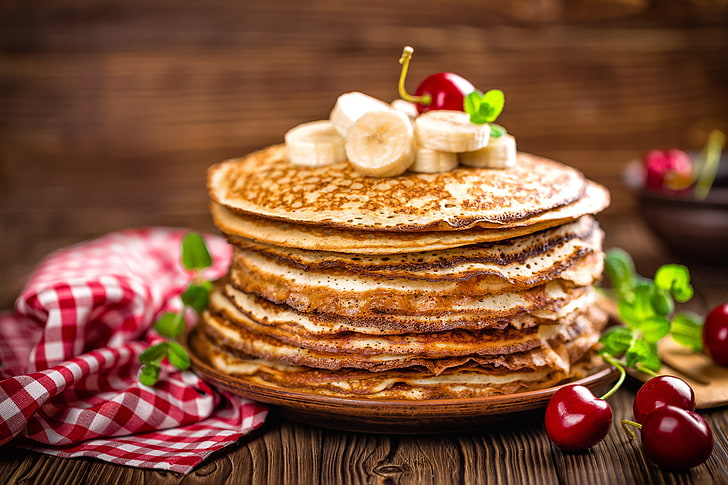

Banana Pancakes

Description
These banana pancakes are fluffy, naturally sweet, and perfect for breakfast. Made with simple ingredients and ready in minutes.
Serve with honey, syrup, or fresh fruit for a healthy and delicious start to the day.
Ingredients
- 2 ripe bananas
- 2 eggs
- 1/2 cup flour
- 1/2 tsp baking powder
- 1/4 tsp cinnamon (optional)
- Butter or oil for frying
Steps
- Mash bananas in a bowl.
- Add eggs and mix well.
- Stir in flour, baking powder, and cinnamon.
- Heat a non-stick pan with a little butter or oil.
- Pour small amounts of batter and cook until bubbles form, flip and cook the other side.
- Serve warm with toppings of choice.